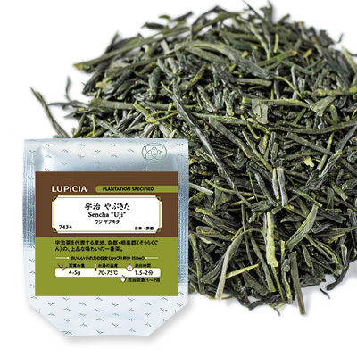
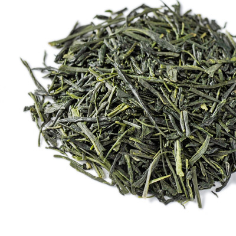

LUPICIA 7434 · g12407434
우지 야부키타
宇治 やぶきた
ウジ ヤブキタ


宇治茶は、静岡茶、狭山茶と並んで、日本三大茶といわれています。
「色は静岡、香りは宇治よ、味は狭山でとどめさす」という言葉が狭山茶摘み歌にもありますが、宇治は香りの良さが魅力です。
宇治茶ならではの爽やかな香りと旨みが特徴で、凛とした上質感が感じられます。
ふくよかですっきりとした飲み口です。
湯冷まししたお湯でじっくりといれることにより、甘み・旨みが浸出されやすいのでおすすめです。
【産地情報】
京都府相楽郡は京都の南部に位置し、滋賀県、三重県、奈良県と隣接しており、和束町（わづかちょう）、南山城村（みなみやましろむら）などを含むお茶の産地です。
宇治茶の歴史は古く、鎌倉時代に高山寺の明恵上人（みょうえしょうにん）の勧めにより、宇治茶の栽培が始まりました。
宇治茶の産地には宇治川、木津川などが流れており、年間1500mm以上の降水量があります。
小高い傾斜のある地形のため、昼夜の温度差により霧が発生しやすく、さらに土質が良く水はけも良いので、まさにお茶栽培に適した産地であり、そのような環境によって宇治の香り高さが生まれます。
【仕上げ】浅蒸し〜普通蒸し
- 상품번호
- 7434
- 상품 형태
- 50g 봉입
- 가격
- 1,200円
- 원재료
- 緑茶（日本）※商品の改定などにより、商品パッケージの記載内容が上記内容と一部異なる場合がございます。
- 원산지
- 日本※商品の改定などにより、商品パッケージの記載内容が上記内容と一部異なる場合がございます。
- 찻잎
- 4-5g
- 물
- 70-75℃
- 우림 시간
- 1.5-2分
- 우림 횟수
- 1-2回
다른 포장
보관된 상품 정보 갱신일: 2025-07-26